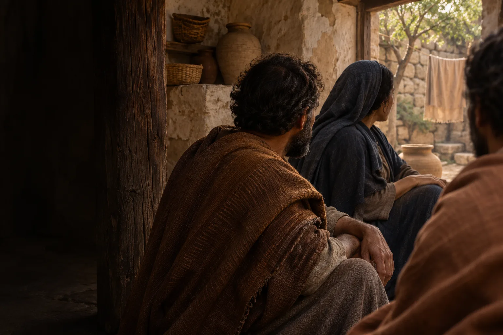
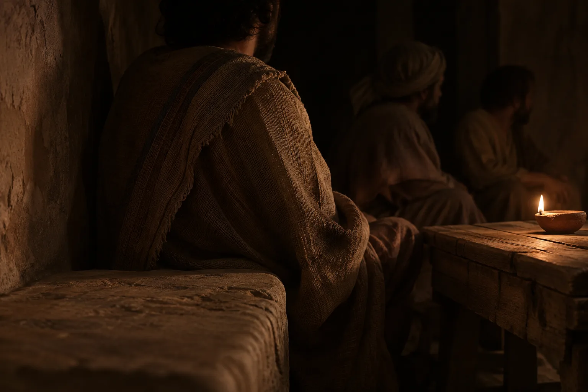

Movement II · Human proximity
“We have seenthe Lord!”
John 20:25 · World English Bible · excerpt

Movement II · Enclosed nocturne
These are original composition studies. The complete verse and source context belong in the implementation. Neither image identifies a historical witness, location or recorded conversation.